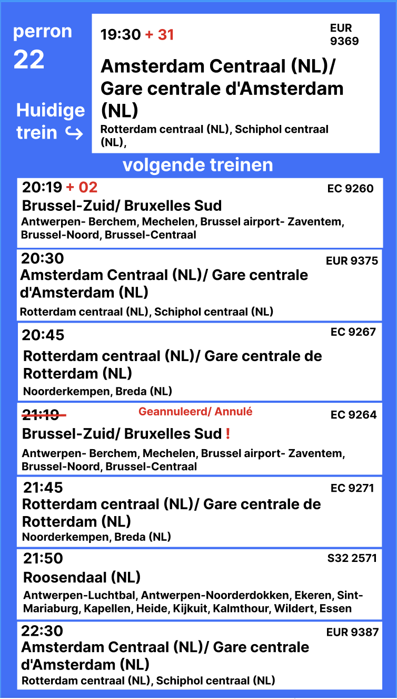
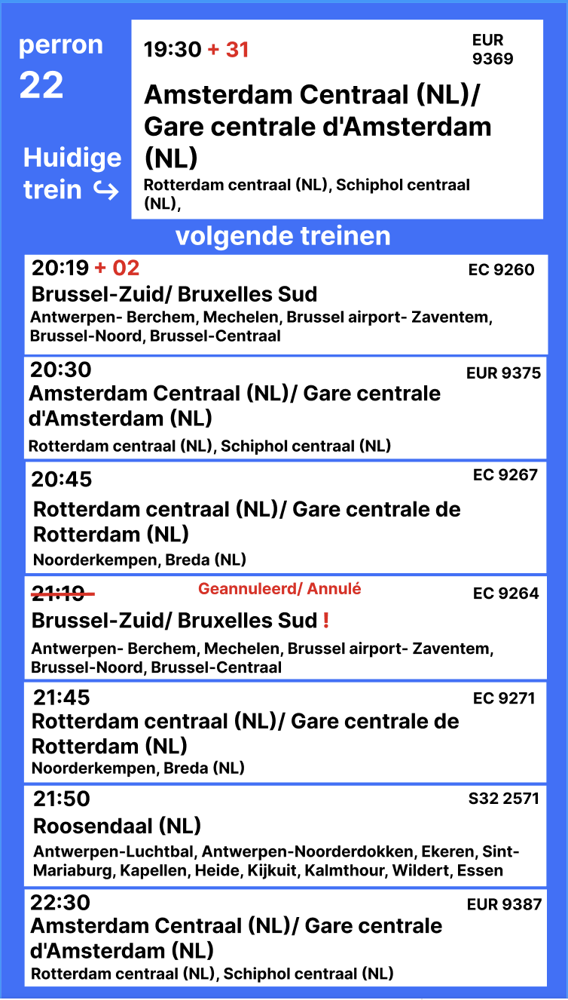
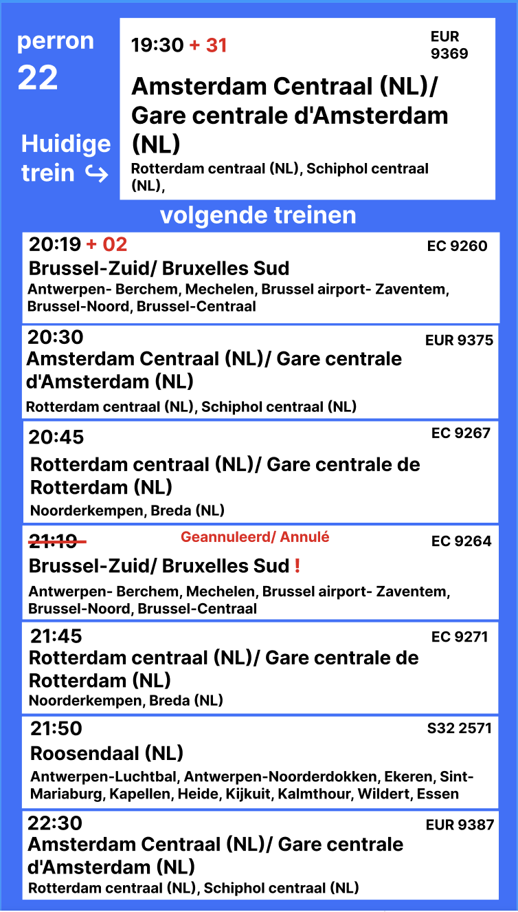

Nicky van Leeuwen
1GDM2
In week 4 hebben we feedback gekregen op onze mid-fidelity schermen. Aan de hand van deze feedback ben ik begonnen met het maken van mijn high-fidelity schermen.
Tijdens dit proces merkte ik dat het soms lastig was om alles wat ik wilde laten zien overzichtelijk te houden. Daarom heb ik besloten meer gebruik te maken van iconen en minder informatie op het wagonscherm te plaatsen. Hierdoor wordt het scherm duidelijker en overzichtelijker voor de treinreizigers. Ik heb ook ervaren dat iconen niet alleen visueel aantrekkelijk zijn, maar ook helpen om informatie snel en gemakkelijk te begrijpen, vooral voor mensen die haast hebben. Door deze aanpassingen heb ik geleerd hoe belangrijk het is om informatie op een gebruiksvriendelijke manier te presenteren en dat soms minder meer is.
